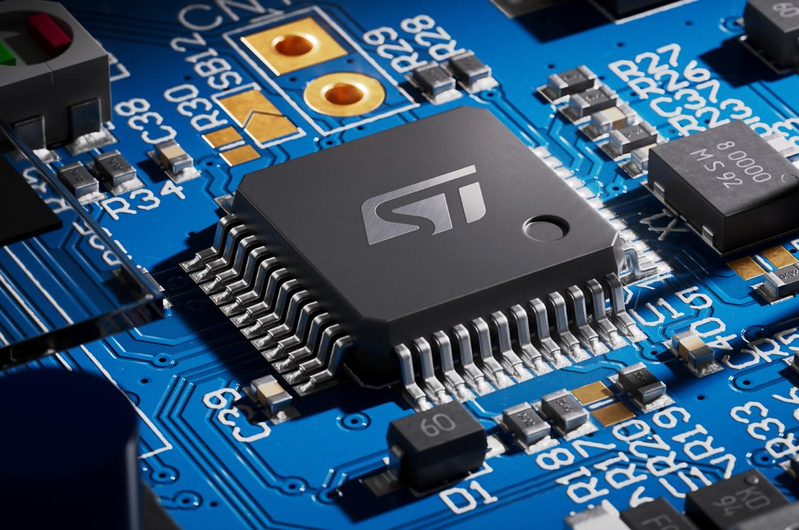

Embedded Systems
آموزش پروژهمحور STM32من محمود عبدلی، فارغالتحصیل دکتری مهندسی برق ـ الکترونیک هستم و در زمینه طراحی، برنامهنویسی و کار با سیستمهای مبتنی بر میکروکنترلر فعالیت میکنم.
در این سایت تلاش میکنم آموزش STM32 را به زبان فارسی و بهصورت مرحلهبهمرحله، پروژهمحور و کاربردی ارائه کنم. آموزشها از مباحث پایه مانند GPIO، Timer، UART، PWM، ADC، I2C و SPI شروع شده و به مباحث پیشرفتهتر و کار با قطعات و ماژولهای مختلف میرسد.
هدف من این است که مطالب به گونهای ارائه شوند که علاقهمندان، دانشجویان و مهندسان بتوانند علاوه بر یادگیری مفاهیم، آنها را در پروژههای واقعی نیز به کار بگیرند.
همچنین در کنار آموزش، طراحی و اجرای پروژههای دانشجویی و صنعتی در زمینه میکروکنترلرها، سیستمهای الکترونیکی و اتوماسیون نیز انجام میشود.
هدف این مجموعه، ایجاد مسیری کاربردی برای یادگیری، طراحی و اجرای پروژههای عملی در زمینه STM32 و Embedded Systems است.